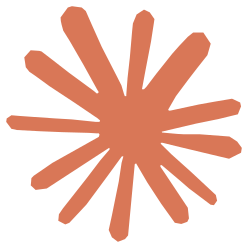

Un punto de partida
para cada sesión.
Consulta el trabajo activo, sus bloqueos y dependencias relevantes. Retoma con contexto, no desde cero.
Una memoria de trabajo local para tus proyectos y los agentes que te ayudan a construirlos.

Claude CodeConsulta el trabajo activo, sus bloqueos y dependencias relevantes. Retoma con contexto, no desde cero.
Organiza proyectos con planes, fases y tareas. Registra avances y vuelve al historial cuando lo necesites.
Daybook usa SQLite y guarda sus datos separados de los repositorios. Los documentos permanecen en tu proyecto.
Una utilidad independiente que se conecta mediante MCP por stdio. La configuración manual depende de las capacidades de cada cliente; no requiere una interfaz ni una metodología impuesta.
Tu agente consulta y registra el trabajo en Daybook mediante MCP. Los datos quedan en SQLite; los documentos, en tu proyecto.
Ver cómo instalarNecesitas Node.js 24 o superior, npm y el paquete disponible en GitHub Releases.